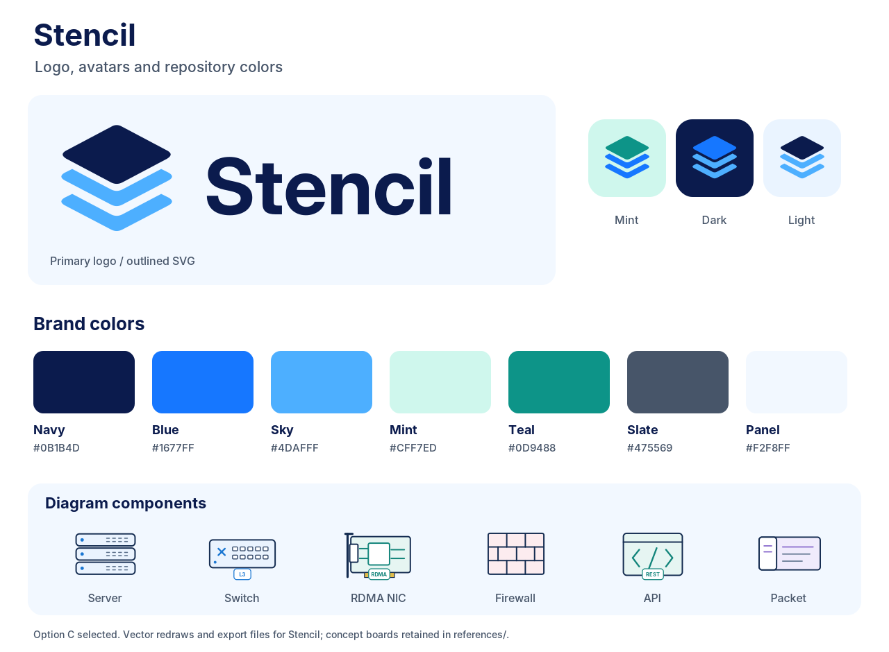
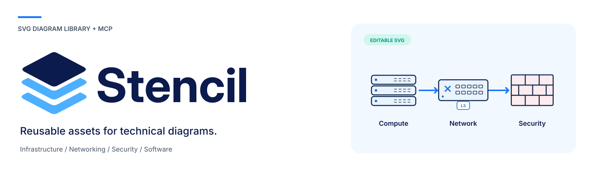
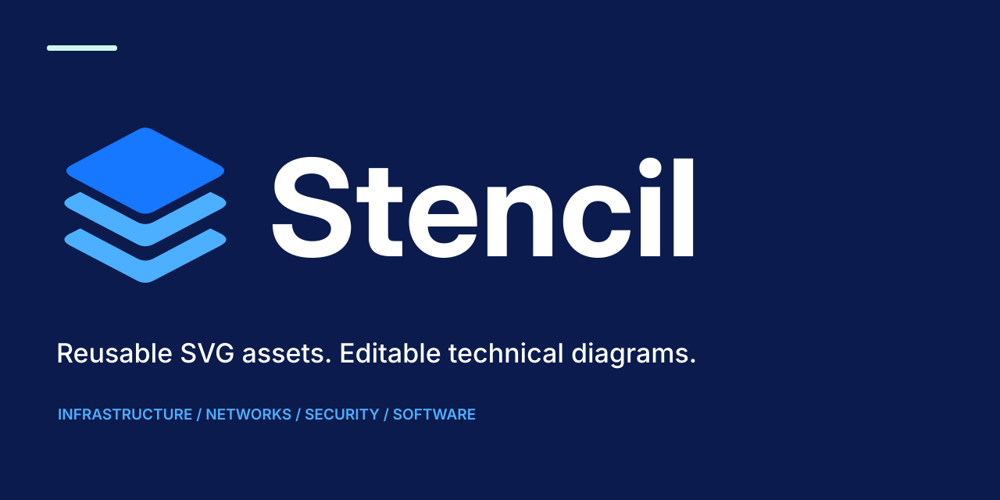

Mint avatar
Primary GitHub/avatar treatment.
SVG · PNG
Primary GitHub/avatar treatment.
SVG · PNGBlue layers on navy.
SVG · PNGPrimary mark on white.
SVG · PNGTransparent SVG with outlined wordmark.
SVG · PNG
Vector original and PNG export.
SVG · PNG
1280 × 640 artwork.
SVG · PNG